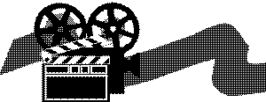

|
|
TRs
Instructions 1: |
|
|
TRs
Instructions 1: |
 |
Both
Students:
<----- Distance Attention Confront |
 |
|
Student confronts (eyes open) |
<Distance> |
Student confronts (eyes open) |
In this chapter and the following ones we are going to teach you how to do the TRs correctly.
You already know a good deal about the TRs. In the chapter 'Auditing and Communication', we emphasized how important communication is to achieving results in auditing and that the TRs are the drills that teach you the fine points of how to how to apply the communication formula to a session.
You have to know these drills cold and to do them
effortlessly in session. It takes scores of hours of hard work (and a lot of
fun) to get them right; when you finally have them down, and you think you know
them in and out, you may discover that your instructor wants you to do some
more.
R. Hubbard estimated it should take a week full time, more or less, to pass the
drills to professional standard. The course is however to result and there is
not any set time limit on a correctly run course.
It may be tough to get through the drills but relax. As you learned in the chapter about ARC, life is ARC, the purpose of auditing is increased ARC - and the TRs will certainly increase you ARC. Every hour spent on these drills will not only benefit you as an auditor, as you get the necessary skills to run a perfect session, it will also give you the skills to run your life better. Life is ARC. ARC is life and the TRs are how you deal with life and ARC.
The TRs and the perfect communication cycle start with confronting. As there are several definitions in the English dictionary of 'Confront', let us point out exactly what we mean: "To face without flinching or avoiding". A sentence with that meaning: "A free society has to be able to confront its problems and resolve them peacefully".
 |
|
|
To stand facing or opposing, |
To face without |
But one has to be able to face things in order to do something about them. This is an important first step. If one cannot face something, if he avoids them instead, then he is not aware.
Awareness is the ability to perceive the existence of. So confront in our specific use of the word is: "Facing up to reality without shrinking back and therefore fully conscious of the real universe and other beings around."
If you can confront, you can be aware. If you are aware, you can perceive and act. If you cannot confront, you will not be aware of things and will to that degree be withdrawn and not perceiving. You will thus be unaware of what is going on around you.
"That which a person can confront, he can handle".
That is a basic law.
The first step in handling anything is to face it. You could say that war keeps being a threat to Man because Man cannot confront war. The more terrible and unconfrontable weapons that Man invents, the more sure it is that the plague of war will continue. As war gets harder and harder to confront the less Man's ability becomes to stop fighting them.
This is actually the basic anatomy of a problem. A
problem starts with the inability to confront something. One
can trace the beginning of any problem back to this: an unwillingness or
inability to confront an area.
Lets take an example from work: let's say a person can't confront his boss; he
will for sure have endless problems with that job and will probably have to find
another job after a short period of time.
It's an obvious truth that one never solves anything by
running away from it.
Of course, one could say on the other hand, you will never solve the problems of
bullets and cannon balls by exposing yourself to them, by not taking cover.
The ironic truth is that if people did not care if they got
shot, cannon balls and bullets as a means of controlling them would be useless
and would soon fall out of use as a way of control.
If you were to interview homeless people that live on the
street, you would soon find that there wasn't one instance where their basic
difficulties couldn't be traced back to their inability to confront.
An auditor once told me a story about a criminal, that he tried to help. The
criminal was paralyzed in the one side of his body as was his right arm. He had
made a living by walking up to people in dark places and knocking them down and
taking their money and valuables. The criminal could not connect his paralysis
with the fact that he used his arm to strike people. Since
his childhood he had been taught not to confront men. The closest he could come
to confronting men was to seek them out in a dark alley and strike them down.
That is how he got started on his criminal career.
The more terrible crime is made to look in the press, on TV and in books, the more they present it with an atmosphere of glamour and terror, the less society will be able to handle crime.
In education, the more intellectual and complicated a subject is made, the less the students will be able to handle the subject. This is routinely done to a number of subjects as to make them inaccessible and thus more 'respectable'. It can be true in medicine, law, and science.
Early 19th and 20th century psychiatry was made complicated and incomprehensible. Further, the subject demonstrated such a basic lack of understanding of Man, that no student could possibly confront it. It presented Man as so beastlike that nobody would want to confront his basic nature and problems.
In ST we have to overcome the idea that the mind is a complicated and formidable subject. Many students come in with the idea that it is a dangerous subject, that it is a very complicated subject, and it is a very risky undertaking to try to understand the mind. Some, in fact, fear for their sanity. Indeed, that the students have turned up for ST class at all speaks to their utmost courage and eagerness to explore.
But they will often come in with these ideas they have from psychology and psychiatry, that the subject is extremely complex and a little bit dangerous. This is due to psychology's and psychiatry's inability to confront Man and his nature. It has over the centuries been made into a scary field - a dangerous field one should keep out of if he had his own good interests in mind.
This tradition, to make Man, his mind and spirit, seem to be scary subjects is not an invention of psychology. It goes back for centuries and centuries. The old popular beliefs and superstitions around ghosts, demons, and evil spirits talk to this. Spirits were made to look so evil and so dangerous, that Man in general gave up on the idea that he could be anything else than a piece of meat and a brain. The idea that Man has a soul or was a soul wasn't acceptable in that context.
This corruption of basic ideas may very well have originated with hidden enslavers. By making Man so confused about his basic nature, by making him incapable of confronting it, Man got confused and weaker, easier to control.
Communism is an example of this. They gave the soul and spirit such a bad name and prohibited religion by law in order to turn the population into a herd of manageable sheep.
"The soul is invisible and thus it does not exist" seems to be the logic here. This has been used by these enslavers to either deny the souls existence or paint it any way they saw fit. It is not an easy task to confront the invisible; yet each time the invisible and the unknown have been confronted honestly and courageously in science and exploration Man has made leaps forward.
So confronting is at the heart of gaining true knowledge, of gaining peace of mind, and of throwing off chains of slavery.
 |
"The content of the
|
Confronting and the Mind
The content of the Reactive Mind could be reduced
to an accumulation of 'pictures'.
What you find in the Reactive Mind are mental image pictures with a very detailed recording of time, place, event, the exact consideration at the time, etc., etc. - all these facts in great detail. Man in his normal state is not capable of confronting these pictures. They make him depressed, make him sick and give him all kinds of non-survival ideas. They make him unable to think clearly about things and make him act in irrational ways.
One of R. Hubbard's basic experiments was, to 'run an incident'. He would ask a person, that had just come into his office to lie down and relax (they were using a couch or bed back then).
He would instruct the person something like this: I want to run an incident. I will send you back to an earlier moment of today and have you go through that incident moment for moment as if it were happening right now. He would snap his fingers and say: "Be at the breakfast table of this morning." "Good". "Go through the event of eating breakfast as if it were happening right now and tell me every single detail as you go along." The patient would do this. His average patient could recount these recent incidents with an astonishing grade of detail and many perceptions. He could be made to recall sounds, smells, feeling of fullness, etc., etc. He could be made to recall conversations he had paid no attention to at the time and recall them word for word and make out the meaning in session. So, obviously the person was looking at and listening to recordings. Recordings you know, you make a recording or a video so you can look at it later and make sense of it then.
It soon became clear in R. Hubbard's research, that the 'unconscious mind', or Reactive Mind as he called it, was full of these very detailed and sometimes horrible recordings. It became clear that often, if a person was confronted with 'unconfrontable' things, he would shut down analytically. He would become less aware and to a degree unconscious. But he would still make a recording of the incident! The motto of the Reactive Mind could be said to be: "let's close our eyes and make a recording so we don't have to look at it now and let's get the hell out of here."
 |
"Let's close our eyes and |
It is something like what a TV crew in a war zone would do. They are near the front where all types of fighting and hostilities take place. They have no desire to get hurt. They may not even want to see and know what is going on. But they set up their cameras and their microphones and start them rolling and seek cover themselves. When the battle is over they pick up their equipment and ship the tapes back to their news editor at the TV station and let him make sense out of it all.
So the Bank is full of pure unedited recordings with no attempts to make sense out of them. It is full of recordings of incidents that were never confronted. And here we are back on track: Confront.
What is wrong with your pc -- this perfectly normal guy that sits in front of you, but has all these odd ideas and fears, etc. that he manages to keep in check and sweep under the rug -- is his confront. He has all these recordings in his Bank of incidents he couldn't confront when they took place. So he said to himself: Let me make a recording of this, seek cover, and get the hell out of danger. I'll look at it later.
Well, now is the time. That's why he is sitting in the pc chair in front of you. He is asking you to be his 'news editor' and help him look at all these old recordings and hopefully make them less scary and help him make some sense out of them.
The ability to handle and confront recordings in the mind is an important first step.
On the Recall Grade on this level, you will get some subjective familiarity with that. On the recall step you deal mainly with pleasant incidents, but you see, it is an important first step just as running the incident of 'eating breakfast this morning' is a first step in learning to run incidents.
As a pc goes along in auditing he gets more and more familiar with handling all these recordings in his mind. Eventually he becomes so good at it so he realizes that there are no more pictures in the Reactive Mind. And this we call Clear!
A Clear in an absolute or ideal sense, would be someone that could confront anything and everything in the past, present and future. This would be the ultimate state of case. A Clear in the sense of ST is a person, that has confronted his Reactive Mind and is at cause over mental matter, energy, space and time (= mental MEST). That is what his recordings consist of.
Strange as the idea may be the world of action it will become clear that a pc that can confront anything will feel no need to handle anything. There is a process on ST Level One called "Problems of Comparable Magnitude". Observing this process in action supports that statement.
The pc is first asked to select a terminal which has caused him a lot of difficulties. The definition of "terminal" is a 'live mass' or something that is capable of receiving and sending communications. What usually comes up are people in the problem category; they are in any pc's Bank as 'live masses'. The auditor will then ask the pc to "invent a problem of comparable magnitude to that (named) person". The pc is given this auditing command many, many times. It is run as a repetitive process. It may start out with the pc being apathetic about this person in his life, this terminal which is also in his Bank.
At some point half way through the process the pc will be willing to do something about it. He is now suddenly willing to consider doing this and that about his problem, often wild and violent things that at least would solve that problem. Solving problems in a wild or violent way will however usually cause a whole new set of problems, so that tells the auditor he isn't done yet.
The auditor keeps up the process "Invent a problem of comparable magnitude to that (named) terminal". At the end of the process a new and strange phenomenon takes place. The pc no longer feels that he must do something about the problem. He has come up to a point where he can confront the problem and the persons involved. He can look upon it all with the greatest peace of mind.
Now an almost mystical phenomenon is likely to take
place. It will be found that the problem in the physical universe, that had
worried the pc half to death and wrecked his life, suddenly seems to have ceased
to exist. In other words the ultimate handling of
this problem was to raise the pc's ability to confront it. As soon as he
could confront it completely it miraculously disappeared as a problem.
It can be hard to believe, that a woman who has the problem
of an alcoholic husband could cure that individual from drinking simply by
processing her problem with it. Yet this has been seen to happen in
numerous cases.
I am not saying that running 'problems of comparable magnitude' on a few people could solve all the problems in the world. But with every individual that comes up to confront the problems of the world, we are one giant step closer.
It could be a theoretical possibility that if there existed one person in the universe who could confront the entire universe and all the problems in it, the whole universe would become a better place for everybody; it would feel less solid and uncooperative. Progress in science and technology is actually steps in that direction.
Man's difficulties are his piled-up incidents of flinching, avoiding, and cowardly retreating. To start having real difficulties in life all you have to do is to run away from your problems and the business of living. After that, unsolvable problems will take over your life. When people do not confront life they will build up their difficulties.